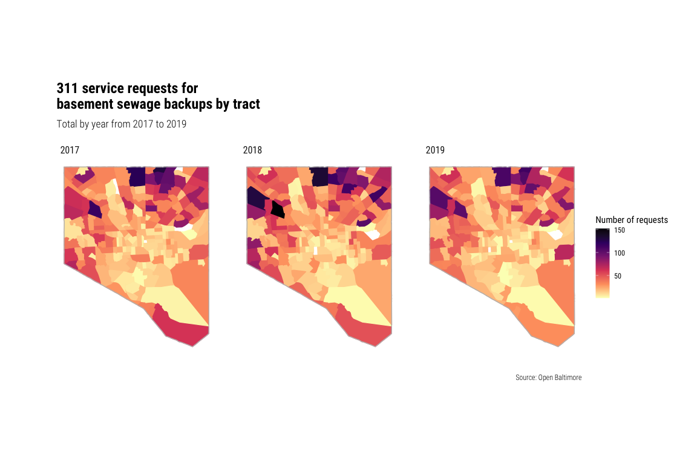

Data on 311 calls about basement sewage backups from October 2010 through the present was imported from Open Baltimore using the RSocrata package. These requests are a proxy for the actual occurrence of basement sewage backups but do have several limitations. The requests include backups attributed to a range of issues including issues within the property’s own plumbing. These latter backups are considered the responsibility of the property owner and are not eligible for the city’s reimbursement program. We also believe that backups may be under-reported by tenants under the assumption that tenants are more likely to report an issue to a landlord who may or may not report to 311. We also assume that property-owners who may be unfamiliar with the reimbursement program may not see the need to report a smaller scale sewage backup.
The record for each request included columns for the service request number, request created date, status, status date, street address, latitude and longitude. The four types of request status included new, open, closed, open (duplicate), closed (duplicate), and closed (transferred). Our analysis excluded duplicate and transferred requests (n = 195) and any requests created either before or after the January 2017 to February 2020 analysis period (n = 18,994). We calculated the days to close for each request by finding the difference between the created date and status date for those requests with a closed status.
A small number of requests (n = 68) had missing location information. By using the street address and the U.S. Census Bureau’s Batch Geocoding service, we identified an exact match 72.1% (n = 49), a non-exact match for 14.7% (n = 10) and no match for 1.3% (n = 9) of these requests. Exact and non-exact matches were both included in a total set of requests with locations.
We then matched the remaining 21,804 requests to the census tract and a neighborhood using the sf R package. Census tract boundaries were imported using the tigris R package and shapefiles with the Baltimore neighborhood boundaries were downloaded from Open Baltimore. Requests included at least one request in 269 of 279 Baltimore neighborhoods (96.4%) and all 200 Census tracts.
104 requests could not be matched to a Census tract. These included 90.4% (n = 94) located outside the city and 9.6% (n = 10) requests with locations issues that placed them outside the boundaries of any tract in Baltimore City. These requests are included in the analysis of frequency of service requests over time but are excluded from the subsequent regression analysis.
92 requests could not be matched to a neighborhood. These included approximately 85.9% (n = 79) located outside the city and 14.1% (n = 13) with location issues that placed them outside the boundaries of any neighborhood in Baltimore City.
We also also matched each tract to a wastewater treatment plant by checking whether tracts were located inside or outside of the service area for the Back River Wastewater Treatment Plant. We traced the boundaries of the service area using a 2004 map (published in the City of Baltimore 2006 Comprehensive Water and Wastewater Treatment Plan) that we previously georectified using the Map Warper web service (“City of Baltimore Comprehensive Water and Wastewater Treatment Plan” 2006). For any tracts that crossed the boundary between the Back River and Patapsco service area, we matched the tract to the service area that contained a majority of the area of the tract.
When we matched requests to tracts and neighborhoods, we counted the total number of requests and unique addresses for each tract. We also determined the median days to close for each tract. We calculated these aggregate counts for the total period of the analysis and for each full year (2017, 2018, 2019) for use in a sensitivity analysis.
Tract-level data on demographic and socioeconomic characteristics were taken from the Census Bureau’s American Community Survey (ACS) 2014-2018 5-year estimates (using the tidycensus R package to import the data). Selected variables for this analysis included:
The share of structures built before 1950 is a combination of the variables for structures built before 1939 and structures built between 1940 and 1949 divided by the total number of structures. The other percent variables are calculated as a share of the summary variable for the corresponding ACS table. The median household income was used to generate a quartile with the lowest median income group ($19,375 to $48,092) using as the reference group in the regression analysis.
Using R, we conducted an exploratory analysis to plot the frequency of 311 service requests for basement sewage back-ups looking at request counts by address, over time (by month, quarter, and year), and over neighborhoods, tracts, and wastewater service areas.
There are 12,967 distinct addresses associated with service requests in this period. 37.7% of these addresses (n = 4,887) are associated with more than one service request, 8.8% (n = 1146) with more than three, and 2.7% (n = 344) with more than five. The median number of service requests is just one but the maximum number of service requests is 23.
For addresses with large numbers of associated service requests, it is unclear whether each service request represents a separate basement sewage backup event or if some requests are simply repeated requests for a single persistent or unresolved sewage backup (and were not marked as “duplicate” requests). For example, 801 Showell Court in the Johnston Square neighborhood is associated with 14 service requests including requests on April 24 and 26, and June 26 and 27, 2018. The table below lists the ten property addresses with the largest number of requests.
In exploring the distribution of service requests by time and location, we looked at both the request count and the address count. A plot showing the number of requests per month is included in Appendix 2. A table showing the number of requests and addresses per quarter is included below. Totalling requests by year 2018 saw the greatest number—8.4% more than in 2017 and 20.2% more than in 2019. 2018 was also Baltimore’s wettest year on record with a total of 71.82 inches of rain throughout the year. Increased rainfall is consistent with expected changes due to a warming climate and a recent study by Blue Water Baltimore and the U.S. Geological Service.

A large share of the neighborhoods with the greatest number of service requests are located in northeast Baltimore within the Heritage Run and Outfall Wastewater System Service Areas.
Belair-Edison, Frankford, and Glenham-Belhar all saw more than 300 service requests in this 26 month period. 14 out of 20 neighborhoods with more than 200 service requests were located in this same area. Backups in this area are due, at least in part, to a very large scale persistent sewage backup along the sewer interceptor flowing to the Back River Wastewater Treatment Plant.
| Neighborhood | Requests | Addresses | Median days to close |
|---|---|---|---|
| Belair-Edison | 642 | 452 | 2.0 |
| Frankford | 515 | 340 | 2.7 |
| Glen | 324 | 231 | 1.6 |
| Howard Park | 332 | 222 | 1.8 |
| Loch Raven | 279 | 202 | 2.9 |
| Hamilton Hills | 300 | 199 | 2.0 |
| Coldstream Homestead Montebello | 281 | 197 | 2.0 |
| Idlewood | 286 | 194 | 2.0 |
| North Harford Road | 273 | 188 | 2.1 |
| Glenham-Belhar | 293 | 184 | 2.2 |
| Neighborhood | Requests | Addresses | Median days to close |
|---|---|---|---|
| Belair-Edison | 642 | 452 | 2.0 |
| Frankford | 515 | 340 | 2.7 |
| Howard Park | 332 | 222 | 1.8 |
| Glen | 324 | 231 | 1.6 |
| Hamilton Hills | 300 | 199 | 2.0 |
| Glenham-Belhar | 293 | 184 | 2.2 |
| Idlewood | 286 | 194 | 2.0 |
| Coldstream Homestead Montebello | 281 | 197 | 2.0 |
| Loch Raven | 279 | 202 | 2.9 |
| North Harford Road | 273 | 188 | 2.1 |
A second cluster is located in northwest Baltimore within the Gwynns Falls Wastewater System Service Area. Howard Park, Glen, Cross Country, and Ashburton all saw more than 200 service requests in the same period. These backups cannot be attributed to the same issue since the Gwynns Falls Service Area flows to the Patapsco treatment plant. Other neighborhoods with high levels of service requests beyond this northeast Baltimore cluster (but still within the Patapsco Service Area) are Beechfield in west Baltimore and Brooklyn in south Baltimore.
In addition to clustering caused directly by physical issues within the wastewater treatment system, it is also possible that clustering may be partially due to greater awareness or willingness to report in some neighborhoods than others. Reports on successful litigation over basement backups, reports on the city’s reimbursement program, or ongoing advocacy by Blue Water Baltimore and other area organizations on the importance of reporting backups to 311 may contribute to greater awareness in some neighborhoods more than others.
Overall, the distribution of requests by tract show very similar patterns as the distribution of requests by neighborhood with the same clusters in northwest and northeast Baltimore. However, the primary purpose of aggregating requests by Census tract is to allow the comparison of different areas based on demographic characteristics. For these initial comparisons, we used the gtsummary R package that used paired t-tests to compare the tracts using the same selected variables we subsequently explored in the regression analysis.
First, we looked at a comparison of the tracts in the highest quartile of requests (ranging from 130 to 402 per tract) to the bottom three quartiles (ranging from 1 to 127 requests per tract). A map of the quartiles is included in Appendix 1 and a table showing this comparison is included below. Overall, the 50 tracts in the top quartile are slightly older, have fewer families in poverty, more owners, and have a smaller share of structures built before 1940. 80% of these tracts are located in the middle income quartiles (ranging from ) with only 10% each in the lowest and highest income quartiles.
Next, we looked at differences by wastewater treatment service area. Overall, the 32 tracts within the Patapsco service area saw a significantly higher median number of requests and those requests were associated with a larger number of addresses within each tract. The median age, share of families in poverty, owner occupancy share, were all the same but the tracts in the Patapsco had a larger median share of Black residents (90%) than the tracts in the Back River area (70%).
| Characteristic | Back River, N = 1681 | Patapsco, N = 321 | p-value2 |
|---|---|---|---|
| Request count | 65 (35, 113) | 116 (68, 157) | 0.005 |
| Address count | 44 (25, 77) | 75 (46, 113) | 0.005 |
| Median age (years) | 35.5 (31.9, 40.0) | 35.9 (33.3, 43.5) | 0.2 |
| White population (%) | 24 (5, 60) | 6 (2, 21) | 0.002 |
| Black population(%) | 70 (24, 92) | 90 (76, 95) | 0.002 |
| Families in poverty (%) | 15 (5, 28) | 18 (13, 23) | 0.2 |
| Owner occupied (%) | 46 (33, 62) | 48 (38, 59) | >0.9 |
| Built before 1940 (%) | 54 (32, 71) | 32 (17, 46) | <0.001 |
| Median income (quartile) | 0.005 | ||
| 1 | 40 (25%) | 8 (26%) | |
| 2 | 34 (21%) | 14 (45%) | |
| 3 | 40 (25%) | 8 (26%) | |
| 4 | 46 (29%) | 1 (3.2%) | |
|
1
Statistics presented: median (IQR); n (%)
2
Statistical tests performed: Wilcoxon rank-sum test; chi-square test of independence
|
|||
Open Baltimore’s public data on service requests’ days-to-close exhibited unusual properties. The days-to-close variable ranged from negative one second to 654 days. The data also indicate that often, many service requests would all be closed at the same time.
We then fit a negative binomial model of tracts’ service request rate on tract demographic variables including percent Black population, percent owner-occupied, median income by quartile, median age, median rent, percent of houses built before 1949, and percent of families in poverty. We fit these models in both Stata and R but only the results from R are presented here.
The number of service requests was significantly and positively associated with increases in percent Black population (IRR 1.69, CI = 1.50, 2.52; p < 0.001) and owner-occupied housing units (IRR 4.58, CI = 3.20, 6.58; p < 0.001), and median household income in the second-lowest quartile ($49,054 - $62,250) compared to the reference quartile ($19,375 - $48,092). All other income quartiles, percent of homes built before 1949, median rent, and percent of families in poverty were not significant and excluded from the final model. Percent white and percent renter were excluded due to collinearity.
| Characteristic | exp(Beta) | 95% CI1 | p-value |
|---|---|---|---|
| Black population (%) | 1.95 | 1.50, 2.52 | <0.001 |
| Median household income (quartile) | |||
| $19,375 to $48,092 (1) | — | — | |
| $49,054 to $62,250 (2) | 1.23 | 1.02, 1.47 | 0.025 |
| $62,695 to $82,139 (3) | 1.14 | 0.94, 1.38 | 0.2 |
| $83,929 to $213,200 (4) | 0.95 | 0.75, 1.20 | 0.6 |
| Owner occupied units (%) | 4.58 | 3.20, 6.58 | <0.001 |
| Built before 1950 (%) | 0.96 | 0.72, 1.28 | 0.8 |
|
1
CI = Confidence Interval
|
|||
We also stratified by year and fit this model for 2016, 2017, and 2018.
Regressions including only annual data from 2017, 2018, and 2019 indicate relative stability of coefficients over time. The IRR for percent Black population increased slightly each consecutive year.
| Characteristic | 2017 | 2018 | 2019 | ||||||
|---|---|---|---|---|---|---|---|---|---|
| exp(Beta) | 95% CI1 | p-value | exp(Beta) | 95% CI1 | p-value | exp(Beta) | 95% CI1 | p-value | |
| Black population (%) | 1.66 | 1.26, 2.19 | <0.001 | 1.78 | 1.36, 2.33 | <0.001 | 1.96 | 1.50, 2.55 | <0.001 |
| Median household income (quartile) | |||||||||
| $19,375 to $48,092 (1) | — | — | — | — | — | — | |||
| $49,054 to $62,250 (2) | 1.28 | 1.06, 1.56 | 0.010 | 1.13 | 0.94, 1.37 | 0.2 | 1.16 | 0.96, 1.39 | 0.12 |
| $62,695 to $82,139 (3) | 1.22 | 0.99, 1.50 | 0.050 | 1.04 | 0.85, 1.28 | 0.7 | 1.08 | 0.88, 1.32 | 0.5 |
| $83,929 to $213,200 (4) | 0.95 | 0.74, 1.23 | 0.7 | 0.82 | 0.64, 1.05 | 0.11 | 0.92 | 0.72, 1.17 | 0.5 |
| Owner occupied units (%) | 4.48 | 3.05, 6.59 | <0.001 | 4.78 | 3.30, 6.95 | <0.001 | 4.66 | 3.24, 6.73 | <0.001 |
| Built before 1950 (%) | 0.89 | 0.65, 1.21 | 0.5 | 1.00 | 0.74, 1.36 | >0.9 | 0.85 | 0.63, 1.15 | 0.3 |
|
1
CI = Confidence Interval
|
|||||||||
“City of Baltimore Comprehensive Water and Wastewater Treatment Plan.” 2006. Baltimore, MD: Department of Public Works, Bureau of Water & Wastewater. http://www.baltimorecity.gov/sites/default/files/2006_CompW%26WWplan.pdf.